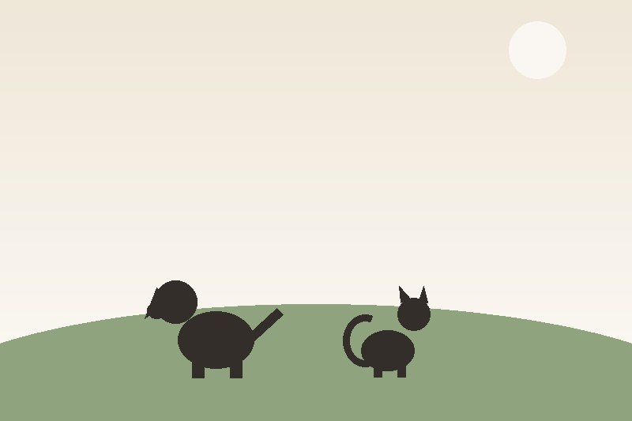

Our Story
Eight years of second chances for rescue animals in Johannesburg
Founded in 2018 in Johannesburg South, Paws & Purpose is run by a small permanent staff and a network of volunteers who rescue, rehabilitate, and rehome abandoned and abused dogs and cats.
What started as one foster home taking in a handful of strays has grown into a shelter with a dedicated intake facility, a rotating team of foster carers, and partnerships with veterinary clinics across the city. We've never turned an animal away for lack of space — instead, we've grown our network of foster homes to meet the need. Ready to meet them? Browse the animals looking for a home or volunteer with us.
Our Mission
To rescue, rehabilitate, and rehome vulnerable animals while educating the community on responsible pet ownership.
Our Vision
A Johannesburg where no adoptable animal is euthanised for lack of space or resources.
Community
Our monthly open shelter day
Volunteers, adopters, and neighbours meet at the shelter on the first Saturday of every month.

images/README.txt).Life at the Shelter
Gallery: a day with our rescue dogs and cats
Select any picture to view it larger. Use the arrow keys or swipe to move between images.
Illustrations stand in for real shelter photography until it is available.
Our People